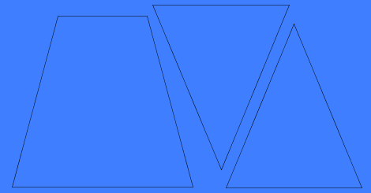
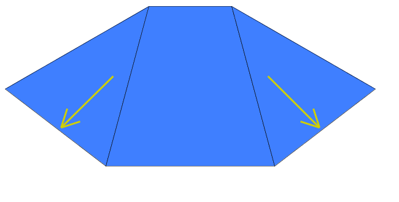
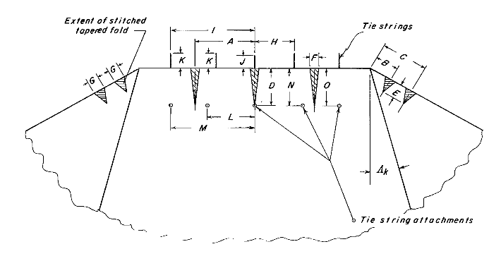
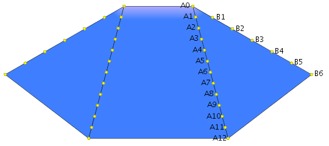

De vlieger
| Lk | cm |
| Lk,1 | cm |
| Oppervlakte: | m2 |
| Spanwijdte: | |
| Hoogte middenpaneel: |
Afmetingen
Materialen
| Vliegerstof: | ||
| Patroonpapier: | ||
| Toomlijnen: | ||
| Versterkingslijnen: | 60-80 kg dacron | |
| Q-punt lijnen: | ||
| Naaigaren: | ||
| Vliegerlijn: | ||
| Handvatten: |
Mallen
Dit is de versie met zo min mogelijk naden. De versie de minder stof kost komt hier nog bij.
In de afbeeldingen hieronder staan links de maten van de mal, rechts de markeringen die je op de mal kunt aanbrengen
Het middenpaneel:Vliegerstof snijden
Hieronder zie je een voorbeeld van hoe je de mallen op de stof kan plaatsen. Als je de mallen met de rechte kant op cm van de rand van de stof legt, krijg je 3 rechte zijden kado!

Speld de mallen vast, teken met potlood een dunne lijn direct langs de mal, en teken op de zoombreedte afstand hulpstreepjes, om je snijlineaal langs te leggen. (Als je knip in plaats van snijdt, een aaneengesloten lijn tekenen, in plaats van de hulpstreepjes). Leg de snijlineaal langs de zoom-hulplijnen en snij de delen uit met een stanleymes. Breek een punt van het mes af als de stof meetrekt met het snijden.
Snij twee strookjes stof uit: van 2.5x40 cm voor de T-touwtjes, en van 2.5x cm voor de strook die de versterkingslijn in de neus afdekt.
Vliegerdelen naaien
Delen aan elkaar
Stik, als je de vliegerdelen aan elkaar zet, steeds de zelfde kant op, van de neus (LE) naar de achterkant (TE). Als de stof dan tijdens het naaien opstroopt, is de kans dat het symmetrisch gaat zo groot mogelijk.
Speld de vliegerdelen met de "buitenkant" op elkaar, zodat de lijnen die je direct langs de mal hebt getekend op elkaar liggen. Naai de delen vast met een rechte steek, in de lengte over de mal-lijn heen. Vouw de vliegerdelen uit elkaar, en vouw de zoom plat richting de vleugels. De versterkingslijn kun je onder deze zoom leggen. Naai de zoom + versterkingslijn met een stevige steek (driedubbele zigzag, zigzag met tussensteken) plat op de vleugel. (foto) Leg in de versterkingslijn aan de TE een lus van 10 cm, waarvan 6 cm onder de TE uitsteekt, en 4 cm mee wordt vastgestikt met de stevige steek. Aan deze lussen kun je de toomlijnen vastmaken als je de vlieger opbergt.
Randen
In de TE, in de vleugels komt een trimlijn. Dit zijn dus de randen die hieronder met de gele pijlen zijn aangegeven:

Leg de versterkingslijn op de rand van de vlieger, en sla de rand 2 keer om. Schuif de versterkingslijn binnen het 'rolletje' zo veel mogelijk naar de buitenkant van de vlieger. Stik met een rechte steek over het rolletje, zo dicht mogelijk langs de versterkingslijn, maar kijk uit dat je de versterkingslijn niet vastnaait. Naai de trimlijnen op de buitenste hoekpunten wel vast, en laat ze bij het middenpaneel een paar centimeter uitsteken. Leg er daar een 8-knoop in om te zorgen dat de lijn niet in de rolzoom wordt teruggetrokken.
De versterkingslijn moet in de overige randen juist niet schuifbaar zijn. Leg een versterkingslijn op de rand vande vlieger en sla de rand 2 keer om. Stik de rand, inclusief verstekingslijn vast met een stevige steek.
De neus
In de tabel hieronder zie je
- Waar de neusversterkingslijn moet komen (D, N en O)
- Waar de T-touwtjes worden aan de versterkingslijn en neus-rand worden bevestigd (midden, H met L en I met M)
- Hoe lang de T-touwtjes zijn (J en K)
- Waar de coupenaden komen (A, B en C)
- Hoe diep de coupenaden de stof in lopen (D en E)
- Hoe breed de coupenaden zijn (F en G)
Als je de aanhechtingspunten vande T-touwtjes op de stof aftekent voordat je de coupenaden naait, scheelt dat later rekenwerk!
|  | A | |
| B | ||
| C | ||
| D | ||
| E | ||
| F | ||
| G | ||
| H | ||
| I | ||
| J | ||
| K | ||
| L | ||
| M | ||
| N | ||
| 0 |
Toomplank
Toomlijnen
Door het naaien kunnen de vliegerdelen iets groter of kleiner zijn dan wat je in het begin hebt opgegeven. Dit is het moment om deze afwijking te corrigeren. Meet, voordat je met de toming begint, de lengte van de zijkant van het middenpaneel op (waar in de afbeelding hieronder de A's bij staan). Vul bovenaan deze pagina de gemeten lengte in in het veld "Lk,1".Bevestiging
Om de bevestigingspunten van de toomlijnen aan te kunnen wijzen gebruiken we de volgende codes:
 Afstand tussen de bevestigingspunten van de A-toomlijnen: cmAfstand tussen de bevestigingspunten van de B-toomlijnen: cm
Toming
Je kunt de toming op verschillende manieren knopen: de klassieke toming en de cascade toming. De klassieke toming is de originele manier van knopen. Deze kun je het beste kiezen als je een kleine vlieger maakt (minder dan 1.5 m2), of als je wilt experimenteren met toomlengtes. De cascade toming gebruikt wat minder meters toomlijn, wat tot minder luchtweerstand leidt.
Kies welke soort toming je wilt gebruiken: KlassiekCascade
Klassieke toming
Bij een klassieke toming kun je de toomlijnen op de lengtes hieronder knopen. Let op: Dit zijn de lenges van knoop tot knoop. Markeer deze lengtes op de lijn (stift, wasco krijt), en knip de lijnen aan beide kanten 8 - 10 cm langer af (afhankelijk van welke knoop je gebruikt).